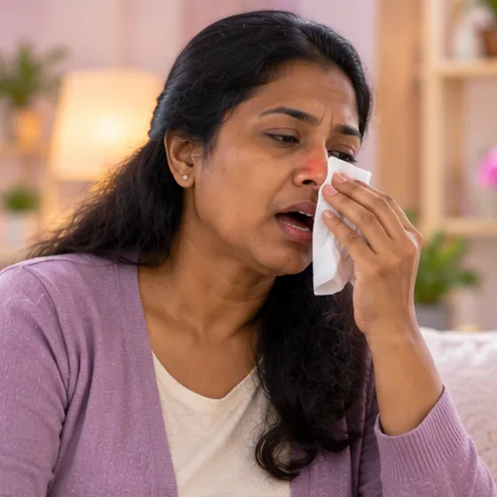
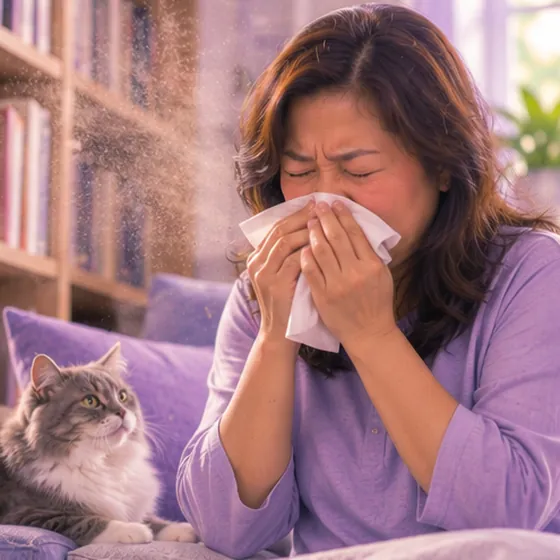

Sakit tekak akibat alahan
Tekak gatal, pedih atau sakit akibat alahan
Apa itu
Apabila badan bertindak balas terhadap habuk, debunga, haiwan peliharaan atau asap, tekak boleh teriritasi, gatal dan sakit, selalunya dengan batuk kering dan hingus mengalir di belakang hidung.
- Tekak
- Habuk, debunga, haiwan, asap
- Tekak gatal, batuk kering
- Jumpa doktor
- Doktor keluarga; pakar telinga, hidung dan tekak jika berpanjangan
- Biasa pada
- Orang yang ada alahan atau hidung sensitif
- Berjangkit
- Tidak
- Perjalanan
- Datang dan pergi mengikut pencetus; biasanya reda apabila dielakkan
Tanda biasa

Tekak sakit dan gatalFaringitis 
Bersin, hidung berairRinitis alahan 
Hidung tersumbatHidung tersumbat (kongesti) 
Batuk keringBatuk kering 
Mata merah dan gatalKonjunktivitis alahan
Mengapa ia berlaku

Habuk, debunga atau haiwan peliharaanAlergen 
Udara kering dan penghawa dinginKelembapan rendah 
Wujud sejak lahirKongenital
Punca lain
- Alahan di hidung yang mengalir ke tekak
Jumpa doktor dahulu jika
- Bibir, lidah atau tekak bengkak, atau sukar bernafas: hubungi 999
- Sukar menelan atau meleleh air liur
- Demam tinggi atau tompok putih di tekak
- Sakit tekak atau suara serak lebih daripada dua minggu
- Kanak-kanak yang sangat tidak sihat: jumpa doktor dengan segera
Jika mana-mana berkenaan, sila jumpa doktor sebelum sesi.
Halaman ini ialah maklumat am. Sila terus mengambil ubat biasa anda dan terus berjumpa doktor.
Teruskan mengambil ubat biasa anda dan terus berjumpa doktor. Sesi kami ialah sokongan lembut dan tidak menggantikan rawatan perubatan.
Menjaga diri

Minum air secukupnyaHidrasi mencukupi 
Tanya ahli farmasiNasihat ahli farmasi
Lebih banyak cara menjaga diri
- Kenal pasti dan elakkan pencetus
- Basuh cadar dan sarung bantal kerap, pastikan bilik tidur bebas habuk
- Jauhi asap; pakai pelitup muka semasa jerebu
Beritahu ahli terapi anda
- Alahan teruk
- Kehamilan
Ahli terapi anda akan menyemaknya bersama anda sebelum bermula.
Soalan dan jawapan
Apakah Sakit tekak akibat alahan?
Tekak gatal, pedih atau sakit akibat alahan. Apabila badan bertindak balas terhadap habuk, debunga, haiwan peliharaan atau asap, tekak boleh teriritasi, gatal dan sakit, selalunya dengan batuk kering dan hingus mengalir di belakang hidung.
Apakah tanda biasa Sakit tekak akibat alahan?
Tekak sakit dan gatal · Bersin, hidung berair · Hidung tersumbat · Batuk kering · Mata merah dan gatal
Mengapa Sakit tekak akibat alahan berlaku?
Habuk, debunga atau haiwan peliharaan · Udara kering dan penghawa dingin · Wujud sejak lahir
Bagaimana menjaga diri dengan Sakit tekak akibat alahan?
Minum air secukupnya · Tanya ahli farmasi
Bolehkah sesi AI Body Master membantu Sakit tekak akibat alahan?
Sesi ialah sokongan meridian tanpa jarum yang lembut untuk kesejahteraan anda. Ia tidak merawat atau menyembuhkan Sakit tekak akibat alahan dan tidak menggantikan ubat atau doktor anda. Beritahu ahli terapi anda sebelum sesi bermula.
Keadaan berkaitan
Rujukan: General information based on public health sources such as Mayo Clinic, NHS, Cleveland Clinic and NCBI StatPearls.
Halaman dikemas kini: 2026-11-01